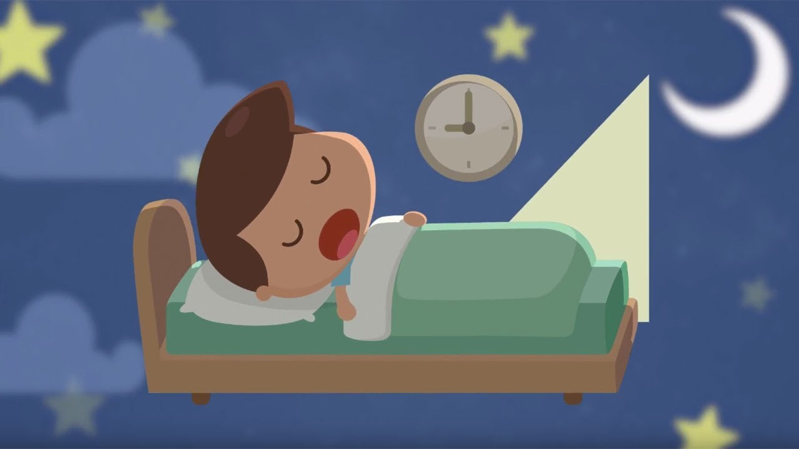

Benefits of a Good Night's Sleep
- A 2013 study on mice conveyed that while the rodents slept, toxins like beta amyloid (amino acids that are in relation to Alzheimer's disease — a disease that destroys memory and other important mental functions — which are found in the brain) deteriorate.
- Cerebrospinal fluid, a clear, water-like liquid that flows around the brain, might have relations with the toxins.
- A research team made a lab experiment where study participants had to lie down and fall asleep inside an MRI machine.
- This experiment was used to get realistic sleep cycles (they even asked the subjects to stay up late the night before so people would be more likely to fall asleep as the test began).
- EEG cap was equipped on the participants to see the electrical currents flowing through their brains (the currents show which stage of sleep the person was in).
- MRI was used to measure the blood oxygen levels in the brain, which shows how much cerebrospinal fluid was flowing in and out of the brain.
- During non-REM sleep, large and slow waves of cerebrospinal fluids were washing over the brain (neurons start to synchronize — they turn on and off at the same time) ← EEG readings.
- Neurons don’t all turn off at the same time when you’re awake, brain blood levels don’t drop enough to allow substantial waves of cerebrospinal fluid to circulate around the brain and clear out all the metabolic byproducts that accumulate, like beta amyloid.
- Metabolic, the leftover products of both catabolism and anabolism (excess salts, phosphates, sulfates, etc.).
- Catabolism: the breakdown of complex molecules in living organisms to form simpler ones.
- Anabolism: the synthesis of complex molecules in living organisms from simpler ones together with the storage of energy
- Tau, a protein that gets tangled in Alzheimer’s patients’ brains and harms the connections between neurons
